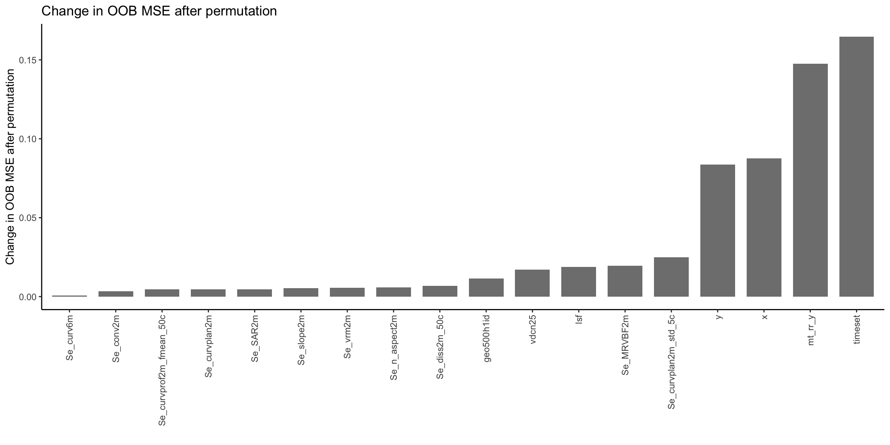

Code
library(dplyr)
library(tidyr)
library(readr)
library(ggplot2)
library(ranger)
library(here)
library(knitr)
library(parallel)library(dplyr)
library(tidyr)
library(readr)
library(ggplot2)
library(ranger)
library(here)
library(knitr)
library(parallel)In this chapter, we are going to use the data prepared in Chapter 2, train a Random Forest model, and evaluate the variable importance of the different predictors_all used in the model. To recap the basics of the Random Forest algorithm and its implementation and use in R, head over to Chapter 11 of AGDS book.
In the previous Chapter, we created a dataframe that holds information on the soil sampling locations and the covariates that we extracted for these positions. Let’s load this datafarme into our environment
df_full <- readRDS(here("data/df_full.rds"))
head(df_full) |>
knitr::kable()| site_id_unique | timeset | x | y | dataset | dclass | waterlog.30 | waterlog.50 | waterlog.100 | ph.0.10 | ph.10.30 | ph.30.50 | ph.50.100 | be_gwn25_hdist | be_gwn25_vdist | cindx10_25 | cindx50_25 | geo500h1id | geo500h3id | lgm | lsf | mrrtf25 | mrvbf25 | mt_gh_y | mt_rr_y | mt_td_y | mt_tt_y | mt_ttvar | NegO | PosO | protindx | Se_alti2m_std_50c | Se_conv2m | Se_curv25m | Se_curv2m_fmean_50c | Se_curv2m_fmean_5c | Se_curv2m_s60 | Se_curv2m_std_50c | Se_curv2m_std_5c | Se_curv2m | Se_curv50m | Se_curv6m | Se_curvplan25m | Se_curvplan2m_fmean_50c | Se_curvplan2m_fmean_5c | Se_curvplan2m_s60 | Se_curvplan2m_s7 | Se_curvplan2m_std_50c | Se_curvplan2m_std_5c | Se_curvplan2m | Se_curvplan50m | Se_curvprof25m | Se_curvprof2m_fmean_50c | Se_curvprof2m_fmean_5c | Se_curvprof2m_s60 | Se_curvprof2m_s7 | Se_curvprof2m_std_50c | Se_curvprof2m_std_5c | Se_curvprof2m | Se_curvprof50m | Se_diss2m_50c | Se_diss2m_5c | Se_e_aspect25m | Se_e_aspect2m_5c | Se_e_aspect2m | Se_e_aspect50m | Se_MRRTF2m | Se_MRVBF2m | Se_n_aspect2m_50c | Se_n_aspect2m_5c | Se_n_aspect2m | Se_n_aspect50m | Se_n_aspect6m | Se_NO2m_r500 | Se_PO2m_r500 | Se_rough2m_10c | Se_rough2m_5c | Se_rough2m_rect3c | Se_SAR2m | Se_SCA2m | Se_slope2m_fmean_50c | Se_slope2m_fmean_5c | Se_slope2m_s60 | Se_slope2m_s7 | Se_slope2m_std_50c | Se_slope2m_std_5c | Se_slope2m | Se_slope50m | Se_slope6m | Se_toposcale2m_r3_r50_i10s | Se_tpi_2m_50c | Se_tpi_2m_5c | Se_tri2m_altern_3c | Se_tsc10_2m | Se_TWI2m_s15 | Se_TWI2m_s60 | Se_TWI2m | Se_vrm2m_r10c | Se_vrm2m | terrTextur | tsc25_18 | tsc25_40 | vdcn25 | vszone |
|---|---|---|---|---|---|---|---|---|---|---|---|---|---|---|---|---|---|---|---|---|---|---|---|---|---|---|---|---|---|---|---|---|---|---|---|---|---|---|---|---|---|---|---|---|---|---|---|---|---|---|---|---|---|---|---|---|---|---|---|---|---|---|---|---|---|---|---|---|---|---|---|---|---|---|---|---|---|---|---|---|---|---|---|---|---|---|---|---|---|---|---|---|---|---|---|---|---|---|---|---|---|---|---|
| 4_26-In-005 | d1968_1974_ptf | 2571994 | 1203001 | validation | poor | 0 | 0 | 1 | 6.071733 | 6.227780 | 7.109235 | 7.214589 | 234.39087 | 1.2986320 | -10.62191 | -6.9658718 | 6 | 0 | 7 | 0.0770846 | 0.0184651 | 4.977099 | 1316.922 | 9931.120 | 58 | 98 | 183 | 1.569110 | 1.534734 | 0.0159717 | 0.3480562 | -40.5395088 | -0.0014441 | -0.0062570 | 0.0175912 | 0.0002296 | 2.9204133 | 1.1769447 | -1.9364884 | 0.0031319 | -0.5886537 | -0.0042508 | -0.0445323 | -0.0481024 | -0.0504083 | -0.1655090 | 1.5687343 | 0.6229440 | -1.0857303 | 0.0007920 | -0.0028067 | -0.0382753 | -0.0656936 | -0.0506380 | -0.0732220 | 1.6507173 | 0.7082230 | 0.8507581 | -0.0023399 | 0.3934371 | 0.1770810 | -0.9702092 | -0.7929600 | -0.5661940 | -0.9939429 | 5.930607 | 6.950892 | -0.2840056 | -0.6084610 | -0.2402939 | -0.0577110 | -0.7661251 | 1.562085 | 1.548762 | 0.3228087 | 0.2241062 | 0.2003846 | 4.000910 | 16.248077 | 0.9428899 | 0.6683306 | 0.9333237 | 0.7310556 | 0.8815832 | 0.3113754 | 1.1250136 | 0.3783818 | 0.5250366 | 0 | -0.0940372 | -0.0583917 | 10.319408 | 0.4645128 | 0.0032796 | 0.0049392 | 0.0011592 | 0.000125 | 0.0002450 | 0.6248673 | 0.3332805 | 1.784737 | 65.62196 | 6 |
| 4_26-In-006 | d1974_1978 | 2572149 | 1202965 | calibration | poor | 0 | 1 | 1 | 6.900000 | 6.947128 | 7.203502 | 7.700000 | 127.41681 | 1.7064546 | -10.87862 | -11.8201790 | 6 | 0 | 7 | 0.0860347 | 0.0544361 | 4.975796 | 1317.000 | 9931.672 | 58 | 98 | 183 | 1.568917 | 1.533827 | 0.0204794 | 0.1484705 | 19.0945148 | -0.0190294 | 0.0021045 | 0.0221433 | 0.0000390 | 3.8783867 | 4.3162045 | 2.1377332 | -0.0171786 | 0.1278165 | -0.0119618 | -0.0501855 | -0.3270764 | -0.1004921 | -0.5133076 | 2.0736780 | 2.2502327 | -0.3522736 | -0.0073879 | 0.0070676 | -0.0522900 | -0.3492197 | -0.1005311 | -0.4981292 | 2.1899190 | 2.4300070 | -2.4900069 | 0.0097907 | 0.4014700 | 0.7360508 | 0.5683194 | 0.8753148 | -0.3505180 | 0.3406741 | 5.984921 | 6.984581 | -0.5732749 | 0.4801802 | 0.4917848 | -0.4550385 | 0.7722272 | 1.543384 | 1.558683 | 0.2730940 | 0.2489859 | 0.2376962 | 4.001326 | 3.357315 | 1.0895698 | 0.9857153 | 1.0231543 | 1.0398037 | 1.0152543 | 0.5357812 | 1.3587183 | 0.0645478 | 0.5793087 | 0 | -0.0014692 | 0.0180000 | 12.603136 | 0.5536283 | 0.0070509 | 0.0067992 | 0.0139006 | 0.000300 | 0.0005389 | 0.7573612 | 0.3395441 | 1.832904 | 69.16074 | 6 |
| 4_26-In-012 | d1974_1978 | 2572937 | 1203693 | calibration | moderate | 0 | 1 | 1 | 6.200000 | 6.147128 | 5.603502 | 5.904355 | 143.41533 | 0.9372618 | 22.10210 | 0.2093917 | 6 | 0 | 7 | 0.0737963 | 3.6830916 | 4.986864 | 1315.134 | 9935.438 | 58 | 98 | 183 | 1.569093 | 1.543057 | 0.0048880 | 0.1112066 | -9.1396294 | 0.0039732 | 0.0009509 | 0.0431735 | 0.0034232 | 0.7022317 | 0.4170935 | -0.4178924 | -0.0026431 | -0.0183221 | 0.0015183 | -0.0079620 | 0.0053904 | -0.0091239 | -0.0110896 | 0.3974485 | 0.2292406 | -0.2168447 | -0.0013561 | -0.0024548 | -0.0089129 | -0.0377831 | -0.0125471 | -0.0052359 | 0.4158890 | 0.2700820 | 0.2010477 | 0.0012870 | 0.6717541 | 0.4404107 | -0.6987815 | -0.3866692 | -0.1960597 | -0.7592779 | 5.953919 | 6.990917 | -0.3006475 | -0.9221049 | -0.9633239 | -0.3257418 | -0.9502072 | 1.565405 | 1.563151 | 0.2305476 | 0.2182523 | 0.1434273 | 4.000320 | 11.330072 | 0.5758902 | 0.5300468 | 0.5107915 | 0.5744110 | 0.4975456 | 0.2001768 | 0.7160403 | 0.1311051 | 0.4620202 | 0 | 0.0340407 | -0.0145804 | 7.100000 | 0.4850160 | 0.0021498 | 0.0017847 | 0.0011398 | 0.000000 | 0.0000124 | 0.7978453 | 0.4455501 | 1.981526 | 63.57096 | 6 |
| 4_26-In-014 | d1974_1978 | 2573374 | 1203710 | validation | well | 0 | 0 | 0 | 6.600000 | 6.754607 | 7.200000 | 7.151129 | 165.80418 | 0.7653937 | -20.11569 | -7.7729993 | 6 | 0 | 7 | 0.0859686 | 0.0075817 | 5.285522 | 1315.160 | 9939.923 | 58 | 98 | 183 | 1.569213 | 1.542792 | 0.0064054 | 0.3710849 | -0.9318936 | -0.0371234 | 0.0029348 | -0.1056513 | 0.0127788 | 1.5150748 | 0.2413423 | -0.0289909 | 0.0020990 | -0.0706228 | -0.0113604 | -0.0301961 | -0.0346193 | -0.0273140 | -0.0343277 | 0.8245047 | 0.1029889 | -0.0272214 | -0.0041158 | 0.0257630 | -0.0331309 | 0.0710320 | -0.0400928 | 0.0529446 | 0.8635767 | 0.1616543 | 0.0017695 | -0.0062147 | 0.4988544 | 0.4217250 | -0.8485889 | -0.8657616 | -0.8836724 | -0.8993938 | 4.856076 | 6.964162 | -0.5735765 | -0.4998477 | -0.4677161 | -0.4121092 | -0.4782534 | 1.562499 | 1.562670 | 0.3859352 | 0.2732429 | 0.1554769 | 4.000438 | 42.167496 | 0.8873205 | 0.8635756 | 0.9015982 | 0.8518201 | 0.5767300 | 0.2149791 | 0.8482135 | 0.3928713 | 0.8432562 | 0 | 0.0686932 | -0.0085602 | 8.303085 | 0.3951114 | 0.0008454 | 0.0021042 | 0.0000000 | 0.000100 | 0.0000857 | 0.4829135 | 0.4483251 | 2.113142 | 64.60535 | 6 |
| 4_26-In-015 | d1968_1974_ptf | 2573553 | 1203935 | validation | moderate | 0 | 0 | 1 | 6.272715 | 6.272715 | 6.718392 | 7.269008 | 61.39244 | 1.0676192 | -55.12566 | -14.0670462 | 6 | 0 | 7 | 0.0650000 | 0.0007469 | 5.894688 | 1315.056 | 9942.032 | 58 | 98 | 183 | 1.570359 | 1.541979 | 0.0042235 | 0.3907509 | 4.2692256 | 0.0378648 | 0.0022611 | -0.1020419 | 0.0161510 | 3.6032522 | 1.8169731 | 0.6409346 | 0.0346340 | 0.0476020 | 0.0378154 | -0.0179657 | -0.0137853 | -0.0146946 | 0.0060875 | 1.4667766 | 0.9816071 | 0.2968794 | 0.0337645 | -0.0000494 | -0.0202268 | 0.0882566 | -0.0308456 | 0.0929077 | 2.6904552 | 1.0218329 | -0.3440553 | -0.0008695 | 0.6999696 | 0.3944107 | -0.8918364 | -0.8864348 | -0.7795515 | -0.4249992 | 4.130917 | 6.945287 | 0.4304937 | 0.4614536 | 0.5919228 | 0.6559467 | 0.4574654 | 1.550528 | 1.562685 | 0.4330348 | 0.3299487 | 0.1889674 | 4.000948 | 5.479310 | 1.8937486 | 1.2098556 | 1.5986075 | 1.2745584 | 2.7759163 | 0.5375320 | 1.2301254 | 0.3582314 | 1.1426100 | 0 | 0.3005829 | 0.0061576 | 10.110727 | 0.5134069 | 0.0043268 | 0.0045225 | 0.0054557 | 0.000200 | 0.0002062 | 0.6290755 | 0.3974232 | 2.080674 | 61.16533 | 6 |
| 4_26-In-016 | d1968_1974_ptf | 2573310 | 1204328 | calibration | poor | 0 | 0 | 1 | 6.272715 | 6.160700 | 5.559031 | 5.161655 | 310.05014 | 0.1321367 | -17.16055 | -28.0693741 | 6 | 0 | 7 | 0.0731646 | 0.0128017 | 5.938320 | 1315.000 | 9940.597 | 58 | 98 | 183 | 1.569434 | 1.541606 | 0.0040683 | 0.1931891 | -0.1732794 | -0.1602274 | -0.0035833 | -0.1282881 | 0.0003549 | 1.5897882 | 0.8171870 | 0.0318570 | -0.0123340 | 0.0400775 | -0.0813964 | -0.0049875 | 0.0320331 | -0.0049053 | 0.0374298 | 0.7912259 | 0.3455668 | 0.0100844 | -0.0059622 | 0.0788309 | -0.0014042 | 0.1603212 | -0.0052602 | 0.0867119 | 1.0207798 | 0.6147888 | -0.0217726 | 0.0063718 | 0.3157751 | 0.5292308 | -0.8766075 | 0.5905659 | 0.8129975 | 0.1640853 | 2.030315 | 6.990967 | 0.6325440 | 0.8054439 | 0.5820994 | 0.7448481 | 0.6081498 | 1.563066 | 1.552568 | 0.3688371 | 0.2607146 | 0.1763995 | 4.000725 | 13.499996 | 1.0418727 | 0.8515157 | 1.2106605 | 0.8916541 | 1.2163279 | 0.4894866 | 1.0906221 | 0.2049688 | 0.7156029 | 0 | -0.0910767 | 0.0034276 | 9.574804 | 0.3864355 | 0.0001476 | 0.0003817 | 0.0000000 | 0.000525 | 0.0001151 | 0.6997021 | 0.4278295 | 2.041467 | 55.78354 | 6 |
Before we can fit the model, we have to specify a few settings. First, we have to specify our target and predictor variables. Then, we have to split our dataset into a training and a testing set. Random Forest models cannot deal with NA values, so we have to remove these from our training set.
In the dataset we work with here, the data splitting into training and testing sets is defined by the column dataset. Usually, this is not the case and we split the data ourselves. Have a look at the section in AGDS Book on data splitting.
As predictors_all we use all the variables for which we have data with spatial coverage - the basis for spatial upscaling. We extracted these data in Chapter 2 from geospatial files and the data frame was constructed by cbind(), where columns number 14-104 contain the covariates data, extracted from the geospatial files. See Chapter 6 for a description of the variables. We use all of them here as predictors_all for the model.
# Specify target: The pH in the top 10cm
target <- "ph.0.10"
# Specify predictors_all: Remove soil sampling and observational data
predictors_all <- names(df_full)[14:ncol(df_full)]
cat(
"The target is:", target,
"\nThe predictors_all are:", paste0(predictors_all[1:8], sep = ", "), "..."
)The target is: ph.0.10
The predictors_all are: be_gwn25_hdist, be_gwn25_vdist, cindx10_25, cindx50_25, geo500h1id, geo500h3id, lgm, lsf, ...# Split dataset into training and testing sets
df_train <- df_full |>
filter(dataset == "calibration")
df_test <- df_full |>
filter(dataset == "validation")
# Filter out any NA to avoid error when running a Random Forest
df_train <- df_train |>
drop_na()
df_test <- df_test |>
drop_na()
# A little bit of verbose output:
n_tot <- nrow(df_train) + nrow(df_test)
perc_cal <- (nrow(df_train) / n_tot) |> round(2) * 100
perc_val <- (nrow(df_test) / n_tot) |> round(2) * 100
cat(
"For model training, we have a calibration / validation split of: ",
perc_cal, "/", perc_val, "%"
)For model training, we have a calibration / validation split of: 75 / 25 %Alright, this looks all good. We have our target and predictor variables saved for easy access later on and the 75/25% split of calibration and validation data looks good, too. We can now move on to model fitting.
The modelling task is to predict the soil pH in the top 10 cm. Let’s start using the default hyperparameters used by ranger().
Have a look at the values of the defaults by entering. ?ranger in your console and study the function documentation.
# ranger() crashes when using tibbles, so we are using the
# base R notation to enter the data
rf_basic <- ranger(
y = df_train[, target], # target variable
x = df_train[, predictors_all], # Predictor variables
seed = 42, # Specify the seed for randomization to reproduce the same model again
num.threads = parallel::detectCores() - 1
) # Use all but one CPU core for quick model training
# Print a summary of fitted model
print(rf_basic)Ranger result
Call:
ranger(y = df_train[, target], x = df_train[, predictors_all], seed = 42, num.threads = parallel::detectCores() - 1)
Type: Regression
Number of trees: 500
Sample size: 605
Number of independent variables: 91
Mtry: 9
Target node size: 5
Variable importance mode: none
Splitrule: variance
OOB prediction error (MSE): 0.3223462
R squared (OOB): 0.4543932 If our target variable was a categorical and not a continuous variable, we would have to set the argument probability = TRUE. The output would then be a probability map from 0-100%.
Although we only used the pre-defined parameters, we already get a fairly good out-of-bag (OOB) \(R^2\) of 0.45 and a MSE of 0.32 pH units. See here for more background on OOB error estimation with Random Forests.
This is the step at which you may want to reduce the number of predictors_all to avoid collinearity and the risk of overfitting. You may also want to optimize the hyperparameters for improving the model performance and generalisability. Different hyperparameter specifications of the Random Forest model that control the model complexity may be compared. A simple way to do that is to use the {caret} R package which provides machine learning wrapper functions for hyperparameter tuning (among many more functionalities). Its use in combination with Random Forest is demonstrated in Chapter 11 of AGDS book. Reducing the number of predictors_all and retaining only the most important ones is important for obtaining robust model generalisability and is approached by what is shown below.
Our model has 91 variables, but we don’t know anything about their role in influencing the model predictions and how important they are for achieving good predictions. ranger() provides a built-in functionality for quantifying variable importance based on the OOB-error. This functionality can be controlled with the argument importance. When set to 'permutation', the algorithm randomly permutes values of each variable, one at a time, and measures the importance as the resulting decrease in the OOB prediction skill of each decision tree within the Random Forest and returns the average across importances of all decision trees. Note that this is a model-specific variable importance quantification method. In AGDS Book Chapter 12, you have learned about a model model-agnostic method.
The model object returned by the ranger() function stores the variable importance information. The code below accesses this information and sorts the predictor variables with decreasing importance. If the code runs slow, you can also use the faster impurity method (see more information here).
# Let's run the basic model again but with recording the variable importance
rf_basic <- ranger(
y = df_train[, target], # target variable
x = df_train[, predictors_all], # Predictor variables
importance = "permutation", # Pick permutation to calculate variable importance
seed = 42, # Specify seed for randomization to reproduce the same model again
num.threads = parallel::detectCores() - 1
) # Use all but one CPU core for quick model training
# Extract the variable importance and create a long tibble
vi_rf_basic <- rf_basic$variable.importance |>
bind_rows() |>
pivot_longer(cols = everything(), names_to = "variable")
# Plot variable importance, ordered by decreasing value
gg <- vi_rf_basic |>
ggplot(aes(x = reorder(variable, value), y = value)) +
geom_bar(stat = "identity", fill = "grey50", width = 0.75) +
labs(
y = "Change in OOB MSE after permutation",
x = "",
title = "Variable importance based on OOB"
) +
theme_classic() +
coord_flip()
# Display plot
gg
What do we see here? The higher the value, the stronger the effect of permutation on the model performance, the more important the variable. The five most important variables are the following:
| Importance rank | Variable name | Description |
|---|---|---|
| 1 | mt_rr_y | Mean annual precipitation |
| 2 | mt_tt_y | Mean annual temperature |
| 3 | mt_td_y | Mean annual dew point temperature |
| 4 | mt_gh_y | Mean annual incoming radiation |
| 5 | be_gwn25_vdist | Horizontal distance to water body at 25m resolution |
We find that the mean annual precipitation is by far the most important variable in determining soil pH in our model. From a soil-forming perspective, this seems plausible (Dawson, 1977). We further find that the four most important variables all describe climate - reflecting its important role as a soil-forming factor. Most of the remaining variables are metrics of the topography. It should also be noted that many of them may be correlated since. Some of them measure the same aspect of topography, but derived from a digital elevation model given at different spatial resolution (see Chapter 6). Due to their potential correlation, dropping one of the affected variables from the model may thus not lead to a strong deterioration of the model skill as its (correlated) information is still contained in the remaining variables.
The large number of variables in our model and the tendency that many of them exhibit a low importance in comparison to the dominating few, and that they may be correlated calls for a variable selection. Reducing the number of predictors_all reduces the risk that remaining predictors_all are correlated. Having correlated predictors_all is a problem - as shown in the context of spatial upscaling by (Ludwig et al., 2023). Intuitively, this makes sense in view of the fact that if \(x_i\) and \(x_j\) are correlated, then, for example, \(x_i\) is used for modelling its true association with the target variable, while \(x_j\) can be “spent†to model randomly occurring covariations with the target - potentially modelling noise in the data. If this happens, overfitting will follow (see here).
Different strategies for reducing the number of predictors_all, while retaining model performance and improving model generalisability, exist. Greedy search, or stepwise regression are often used. Their approach is to sequentially add (stepwise forward) or remove (stepwise backward) predictors_all and to determine the best (complemented or reduced) set of predictors_all in terms of respective model performance at each step. The algorithm stops once the model starts to deteriorate or stops improving. However, it should be noted that these algorithms don’t assess all possible combinations of predictors_all and may thus not find the “globally†optimal model. A stepwise regression was implemented in AGDS I as a Report Exercise (see here).
To dig deeper into understanding how the model works, we could further investigate its partial dependence plots (see here).
An alternative approach to model selection is to consider the variable importance. predictors_all may be selected based on whether removing their association with the target variable (by permuting values of the predictor) deteriorates the model. Additionally, a decision criterion can be introduced for determining whether or not to retain the respective variable. This is implemented by the “Boruta-Algorithm†- an effective and popular approach to variable selection (Kursa & Rudnicki, 2010). Boruta is available as an R package {Boruta}, is based on Random Forests, and performs a permutation of variables for determining their importance - as described in Chapter 12 of AGDS Book for model-agnostic variable importance estimation. The algorithm finally categorizes variables into "Rejected", "Tentative", and "Confirmed". Let’s apply Boruta on our data.
set.seed(42)
# run the algorithm
bor <- Boruta::Boruta(
y = df_train[, target],
x = df_train[, predictors_all],
maxRuns = 50, # Number of iterations. Set to 30 or lower if it takes too long
num.threads = parallel::detectCores() - 1
)
# obtain results: a data frame with all variables, ordered by their importance
df_bor <- Boruta::attStats(bor) |>
tibble::rownames_to_column() |>
arrange(desc(meanImp))
# plot the importance result
ggplot(
aes(
x = reorder(rowname, meanImp),
y = meanImp,
fill = decision
),
data = df_bor
) +
geom_bar(stat = "identity", width = 0.75) +
scale_fill_manual(values = c("grey30", "tomato", "grey70")) +
labs(
y = "Variable importance",
x = "",
title = "Variable importance based on Boruta"
) +
theme_classic() +
coord_flip()
Determine the length \(N\) of the vector of predictors_all deemed important by ("Confirmed") Boruta and compare these “important†variables with the \(N\) most important variables of the OOB-based variable importance estimation demonstrated above.
For the spatial upscaling in the context of digital soil mapping, let’s retain only the variables deemed important ("Confirmed") by the Boruta algorithm and retrain a final Random Forest model. The number of retained variables is 33.
# get retained important variables
predictors_selected <- df_bor |>
filter(decision == "Confirmed") |>
pull(rowname)
length(predictors_selected)[1] 33# re-train Random Forest model
rf_bor <- ranger(
y = df_train[, target], # target variable
x = df_train[, predictors_selected], # Predictor variables
seed = 42, # Specify the seed for randomization to reproduce the same model again
num.threads = parallel::detectCores() - 1
) # Use all but one CPU core for quick model training
# quick report and performance of trained model object
rf_borRanger result
Call:
ranger(y = df_train[, target], x = df_train[, predictors_selected], seed = 42, num.threads = parallel::detectCores() - 1)
Type: Regression
Number of trees: 500
Sample size: 605
Number of independent variables: 33
Mtry: 5
Target node size: 5
Variable importance mode: none
Splitrule: variance
OOB prediction error (MSE): 0.309647
R squared (OOB): 0.4758881 Compare the skill of the models with all predictors_all and with the Boruta-informed reduced set of predictors_all. What is happening?
Save the model object with the reduced set of predictors_all, calibration, and validation data for the subsequent Chapter.
# Save relevant data for model testing in the next chapter.
saveRDS(
rf_bor,
here("data/rf_for_ph0-10.rds")
)
saveRDS(
df_train[, c(target, predictors_selected)],
here("data/cal_for_ph0-10.rds")
)
saveRDS(
df_test[, c(target, predictors_selected)],
here("data/val_for_ph0-10.rds")
)